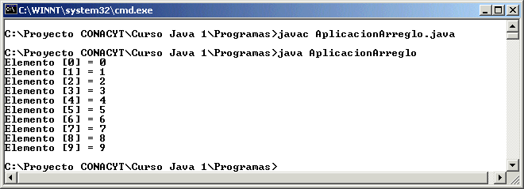
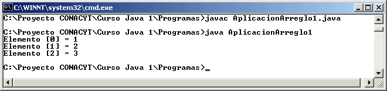
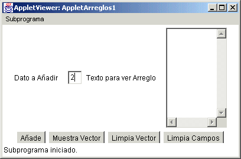
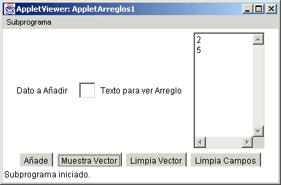
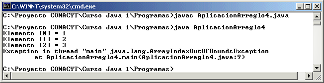
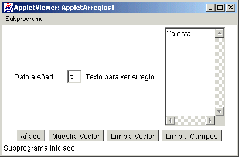
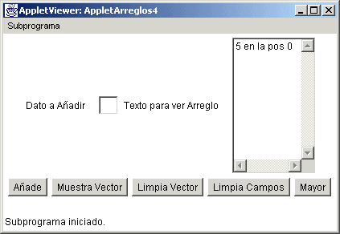

Módulo 6:
Arreglos 
1. Arreglos de una Dimensión
¿Que es un arreglo?
Un arreglo es un tipo de dato estructurado que permite guardar colecciones de elementos del mismo tipo.
Declaración de arreglos
Para declarar un arreglo se utiliza el siguiente formato:
tipo nombre_arreglo [] = new tipo[tamaño];
donde tipo es el tipo de los datos que almacenará el arreglo. Es
importante mencionar que se pueden declarar arreglos de los tipos
primitivos de C++, o bien de tipos definidos por el usuario.
Tamaño representa la cantidad de casillas que se reservan para el
arreglo. En Java todos los arreglos empiezan en el subíndice 0
y llegan al
subíndice tamaño-1.
Por ejemplo:
int arr[] = new int[6]; // arreglo de 6 elementos enteros, los subíndices van del 0 al 5char cad[] = new char[10]; // arreglo de 10 elementos de tipo caracter, los subíndices van del 0 al 9.
Uso de los elementos del arreglo
Para usar los elementos individuales de un arreglo se usa el siguiente formato:
arreglo[subíndice]
Como un elemento de un arreglo es un dato, se puede usar como cualquier variable de ese tipo; Enseguida se pueden ver algunos ejemplos:
int arr[] = new int [4];
arr[3] = 8;
arr[2]= Integer.parseInt(t1.getText());
t2.setText("" + arr[3]);
arr[0] = arr[1] + arr[2];
int k = 2;
arr[k+1] = 20;
Ejemplo:
import java.io.*;
public class AplicacionArreglo {
public static void main(String[] args) {
int arreglo[] = new int [10];
for (int i=0; i<10; i++) {
arreglo [i] = i;
}
for (int i=0; i<10; i++) {
System.out.println("Elemento [" + i + "] = " + arreglo[i]);
}
}
}
Esta aplicación provocará la siguiente ejecución:

Inicializar arreglos en la declaración
En Java es posible inicializar un arreglo al declararlo; esto se hace sin definir el número de elementos y colocando un operador de asignación y después entre llaves la lista de valores para el arreglo separados por comas, veamos los siguientes ejemplos:
double arreglo[] = { 23.5, 54.22, 78};char cadena[] = {‘a’, ‘b’, ‘c’, ‘d’};
En Java es posible saber el número de elementos del arreglo utilizando el nombre del arreglo un punto y la palabra length, como se muestra en el siguiente ejemplo:
import java.io.*;
public class AplicacionArreglo1 {
public static void main(String[] args) {
int arreglo[] = {1,2,3};
for (int i=0; i<arreglo.length; i++) {
System.out.println("Elemento [" + i + "] = " + arreglo[i]);
}
}
}
El cual al ejecutar mostrará lo siguiente:

Es muy sencillo tomar datos y agregarlos a un arreglo, como lo puede mostrar la siguiente aplicación:
import java.awt.*;
import java.applet.*;
import java.awt.event.*;
// <applet width="400" height="200" code="AppletArreglos1"></applet>
public class AppletArreglos1 extends Applet implements ActionListener{
Label l1, l2;
Button b1, b2,b3,b4;
TextField t1;
TextArea ta1;
int arreglo[];
int conta;
public AppletArreglos1() {
l1 = new Label("Dato a Añadir");
l2 = new Label("Texto para ver Arreglo");
t1 = new TextField();
ta1 = new TextArea(10,12);
b1 = new Button("Añade");
b2 = new Button("Muestra Vector");
b3 = new Button("Limpia Vector");
b4 = new Button("Limpia Campos");
add(l1);
add(t1);
add(l2);
add(ta1);
add(b1);
add(b2);
add(b3);
add(b4);
b1.addActionListener(this);
b2.addActionListener(this);
b3.addActionListener(this);
b4.addActionListener(this);
arreglo = new int[100];
conta=0;
}
public void actionPerformed(ActionEvent ae) {
if (ae.getSource() == b1) {
if (conta > arreglo.length) {
ta1.setText("No se puede añadir otro elemento");
}
else {
arreglo[conta++] = Integer.parseInt(t1.getText());
t1.setText("");
}
}
if (ae.getSource() == b2) {
ta1.setText("");
for (int i=0; i < conta; i++) {
ta1.append("" + arreglo[i] + "\n");
}
}
if (ae.getSource() == b3) {
conta = 0;
arreglo = new int[100];
}
if (ae.getSource() == b4) {
t1.setText("");
ta1.setText("");
}
}
}
La cual se visualiza asi:


De la aplicación anterior podemos observar que aunque sabemos que length es el número de elementos en el arreglo, solo estamos utilizando conta en el ciclo para desplegar, ya que esta variable nos dice cuantos elementos se han introducido al arreglo.
Usando mal los Índices
Cuando un subíndice esta mal empleado, haciendo referencia a un elemento en el arreglo que no existe, Java arroja un error de ejecución llamado de excepción, el cual es ArrayIndexOutOfBoundsException, debemos tener cuidado en esto, pues la aplicación se cancela y no continua, como se muestra en la siguiente aplicación:
import java.io.*;
public class AplicacionArreglo4 {
public static void main(String[] args) {
int arreglo[] = {1,2,3};
for (int i=0; i<arreglo.length+1; i++) {
System.out.println("Elemento [" + i + "] = " + arreglo[i]);
}
}
}
La ejecución que muestra la aplicación es:

Podemos observar como la aplicación alcanza a mostrar el último valor posible, pero cuando hace referencia al elemento 3 (ya que en la aplicación la condición es i < arreglo.length + 1, se sale del rango y arroja la excepcion.
1. Modifica la aplicación con interfaz gráfica anterior para que ahora al añadir el elemento en el vector valide que no se encuentre y si esta que coloque un mensaje en el área de texto, como lo muestra la figura:

2. Crea un nuevo botón llamado mayor que al oprimirlo el usuario aparezca en el área de texto el elemento mayor y la posición en la que se encontró dentro del arreglo (tomar la posición cero como la primera y así sucesivamente)., como se muestra en la figura:

http://java.sun.com/docs/books/tutorial/java/data/arraybasics.html